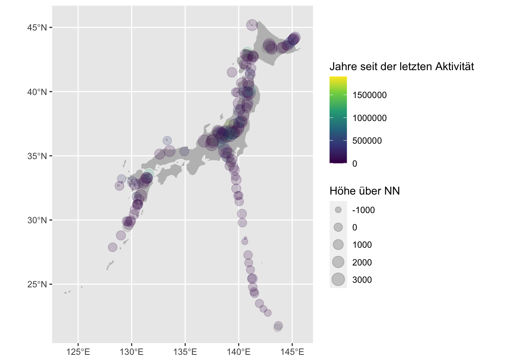

Sitzung 17 String manipulation
17.1 Vorbereitung
Für diese Lektion brauchen wir folgende Pakete:
library(tidyverse)
library(rvest)
library(sf)
library(rnaturalearth)17.2 Aufgabe
Ziel soll sein, aus Wikipedia eine Liste der Vulkane in Japan auszulesen und diese in einer Karte zu visualisieren, die mehr Informationen enthält als die auf Wikipedia angebotenen Optionen.
17.3 Tabellen aus Wikipedia laden
Mit rvest lässt sich eine Liste der Tabellen auslesen:
"https://en.wikipedia.org/wiki/List_of_volcanoes_in_Japan" %>%
read_html %>%
html_table -> alle_tabellen17.4 Tabellen kombinieren
Die Tabellen 1, 2 und 9 sind dabei ergänzende Elemente auf der Wikipedia-Seite und hier uninteressant:
alle_tabellen[c(1:2, 9)]
## [[1]]
## # A tibble: 2 x 1
## X1
## <chr>
## 1 Map all coordinates using: OpenStreetMap
## 2 Download coordinates as: KML
##
## [[2]]
## # A tibble: 1 x 2
## X1 X2
## <lgl> <chr>
## 1 NA This article is actively undergoing a major edit for a short while. To …
##
## [[3]]
## # A tibble: 4 x 2
## `.mw-parser-output .navbar{display:inl… `.mw-parser-output .navbar{display:in…
## <chr> <chr>
## 1 "Sovereign states" "Afghanistan\nArmenia\nAzerbaijan\nBa…
## 2 "States withlimited recognition" "Abkhazia\nArtsakh\nNorthern Cyprus\n…
## 3 "Dependencies andother territories" "British Indian Ocean Territory\nChri…
## 4 "Category\nAsia portal" "Category\nAsia portal"Mit den restlichen Tabellen (3–8) wollen wir weiterarbeiten:
relevante_tabellen <- alle_tabellen[-c(1:2, 9)]Zunächst sollen sie untereinder
(zeilenweise) in einen Datensatz kombiniert werden.
Das geht eigentlich mit dem Befehl bind_rows() ganz gut — allerdings müssen dafür die Spalten die selben Namen (hier gegeben) und die selben Typen haben (hier nicht gegeben).
relevante_tabellen %>%
bind_rows()
## Error: Can't combine `..1$Elevation (m)` <character> and `..3$Elevation (m)` <integer>.In der 3. und 4. Tabelle haben nämlich die Spalten Elevation (m) und Elevation (ft) den Typ int, während sonst alles den Typ chr hat:
walk(relevante_tabellen, str, vec.len = 0)
## tibble [33 × 5] (S3: tbl_df/tbl/data.frame)
## $ Name : chr [1:33] ...
## $ Elevation (m) : chr [1:33] ...
## $ Elevation (ft): chr [1:33] ...
## $ Coordinates : chr [1:33] ...
## $ Last eruption : chr [1:33] ...
## tibble [87 × 5] (S3: tbl_df/tbl/data.frame)
## $ Name : chr [1:87] ...
## $ Elevation (m) : chr [1:87] ...
## $ Elevation (ft): chr [1:87] ...
## $ Coordinates : chr [1:87] ...
## $ Last eruption : chr [1:87] ...
## tibble [14 × 5] (S3: tbl_df/tbl/data.frame)
## $ Name : chr [1:14] ...
## $ Elevation (m) : int [1:14] NULL ...
## $ Elevation (ft): int [1:14] NULL ...
## $ Coordinates : chr [1:14] ...
## $ Last eruption : chr [1:14] ...
## tibble [15 × 5] (S3: tbl_df/tbl/data.frame)
## $ Name : chr [1:15] ...
## $ Elevation (m) : int [1:15] NULL ...
## $ Elevation (ft): int [1:15] NULL ...
## $ Coordinates : chr [1:15] ...
## $ Last eruption : chr [1:15] ...
## tibble [24 × 5] (S3: tbl_df/tbl/data.frame)
## $ Name : chr [1:24] ...
## $ Elevation (m) : chr [1:24] ...
## $ Elevation (ft): chr [1:24] ...
## $ Coordinates : chr [1:24] ...
## $ Last eruption : chr [1:24] ...
## tibble [11 × 5] (S3: tbl_df/tbl/data.frame)
## $ Name : chr [1:11] ...
## $ Elevation (m) : chr [1:11] ...
## $ Elevation (ft): chr [1:11] ...
## $ Coordinates : chr [1:11] ...
## $ Last eruption : chr [1:11] ...Hier ist es zunächst das einfachste, die Spalten in character strings umzuwandeln, um sie kombinieren zu können.
Für eine Spalte hieße das:
as.character(relevante_tabellen[[3]]$`Elevation (m)`)
## [1] "423" "11" "854" "758" "574" "-110" "851" "813" "-50" "432"
## [11] "99" "136" "508" "394"Für eine Tabelle:
relevante_tabellen[[3]] %>%
mutate(across(c(2, 3), as.character))
## # A tibble: 14 x 5
## Name `Elevation (m)` `Elevation (ft)` Coordinates `Last eruption`
## <chr> <chr> <chr> <chr> <chr>
## 1 Aogashi… 423 1388 32°27′N 139°46′E… AD 1785[† 1]
## 2 Bayonna… 11 36 31°53′17″N 139°55… AD 1970[† 14]
## 3 Hachijō… 854 2802 33°08′N 139°46′E… AD 1605[† 1]
## 4 Izu-Ōsh… 758 2507 34°43′34″N 139°23… Mt. Mihara: AD …
## 5 Kōzushi… 574 1877 34°13′N 139°09′E… AD 838[† 1]
## 6 Kurose -110 -361 33°24′N 139°41′E… Caldera: older …
## 7 Mikuraj… 851 2792 33°52′16″N 139°36… 6.3 ka BP[† 1]
## 8 Miyakej… 813 2674 34°05′10″N 139°31… AD 2013[† 16]
## 9 Myōjins… -50 -164 31°55′05″N 140°01… AD 1970[† 1]
## 10 Niijima 432 1417 34°22′N 139°16′E… Mt. Mukaiyama: …
## 11 Sofugan… 99 325 29°47′35″N 140°20… (Discolored wat…
## 12 Sumisuj… 136 446 31°26′20″N 140°03… AD 1916[† 1]
## 13 Toshima 508 1667 34°31′N 139°17′E… 9.1-4.0 ka BP[†…
## 14 Torishi… 394 1293 30°29′02″N 140°18… AD 2002[† 1]Über mehrere Tabellen, mit gleichzeitigem Kombinieren:
relevante_tabellen %>%
map(mutate, across(c(2, 3), as.character)) %>%
bind_rows() -> komplett
komplett
## # A tibble: 184 x 5
## Name `Elevation (m)` `Elevation (ft)` Coordinates `Last eruption`
## <chr> <chr> <chr> <chr> <chr>
## 1 Akaigaw… 725 2379 .mw-parser-output … 1.3 Ma BP[† 1]
## 2 Mount A… 512 1680 43°36′36″N 144°26′… 1000-200 BP[† …
## 3 Daisets… 2290 7513 43°39′47″N 142°51′… AD 1739[† 1]
## 4 Mount E… 1320 4331 42°47′35″N 141°17′… 17th century[†…
## 5 Mount E… 613 2028 41°48′14″N 141°09′… AD 1874[† 1]
## 6 Akan Ca… - - 43°27′04″N 144°06′… 0.25 Ma BP[† 1]
## 7 Mount M… 1499 4916 43°23′10″N 144°00′… AD 2008[† 1]
## 8 Mount O… 1370 4495 43°27′11″N 144°09′… 5-2.5 ka BP[† …
## 9 Mount Iō 1563 5128 44°07′52″N 145°09′… AD 1936[† 1]
## 10 Kusshar… - - 43°37′16″N 144°20′… 2.3 ka BP[† 1]
## # … with 174 more rows17.5 Tabellen säubern
17.5.1 Parse number
Für einige Spalten (Höhe, Koordinaten, letzte Aktivtät) ist ein numerisches Format aber eigentlich tatsächlich wünschenswert.
Eine robuste Möglichkeit dafür ist parse_number():
parse_number("Temperatur: -8° C")
## [1] -8Mit dem Befehl mutate() lassen sich neue Spalten erstellen, oder vorhandene Spalten überschreiben. Mit select() können Spalten selektiert oder (mit einem -) ,gelöscht‘ werden.
Der folgende Befehl wandelt die Spalte Elevation (m) in Zahlen um, gibt dieser neuen Spalte den Namen elevation_m und selektiert dann alles außer den alten Elevation-Spalten:
komplett %>%
mutate(elevation_m = parse_number(`Elevation (m)`)) %>%
select(-`Elevation (m)`, -`Elevation (ft)`) -> vulkane_elevWobei das Attribut problems
darauf hinweist, dass in manchen Strings keine Zahl gefunden wurde. Funktioniert hat es trotzdem (mit NA für fehlende Werte).
vulkane_elev
## # A tibble: 184 x 4
## Name Coordinates `Last eruption` elevation_m
## <chr> <chr> <chr> <dbl>
## 1 Akaigawa Cal… .mw-parser-output .geo-default,.mw… 1.3 Ma BP[† 1] 725
## 2 Mount Atosan… 43°36′36″N 144°26′17″E / 43.610°… 1000-200 BP[† … 512
## 3 Daisetsuzan … 43°39′47″N 142°51′14″E / 43.663°… AD 1739[† 1] 2290
## 4 Mount Eniwa 42°47′35″N 141°17′06″E / 42.793°… 17th century[†… 1320
## 5 Mount Esan 41°48′14″N 141°09′58″E / 41.804°… AD 1874[† 1] 613
## 6 Akan Caldera… 43°27′04″N 144°06′36″E / 43.451°… 0.25 Ma BP[† 1] NA
## 7 Mount Meakan 43°23′10″N 144°00′29″E / 43.386°… AD 2008[† 1] 1499
## 8 Mount Oakan 43°27′11″N 144°09′47″E / 43.453°… 5-2.5 ka BP[† … 1370
## 9 Mount Iō 44°07′52″N 145°09′54″E / 44.131°… AD 1936[† 1] 1563
## 10 Kussharo Cal… 43°37′16″N 144°20′10″E / 43.621°… 2.3 ka BP[† 1] NA
## # … with 174 more rows17.5.2 Reguläre Ausdrücke
Spalten des Typs chr können außerdem mit Befehlen aus dem stringr-Paket (Teil von tidyverse) bearbeitet werden:
str_remove_all()entfernt Teile, die einem Muster entsprechenstr_extract_all()behält nur die Teile, die dem Muster entsprechenstr_detect()gibtTRUEaus, wenn das Muster gefunden wird, sonstFALSEstr_replace_all()ersetzt Teile, die dem Muster entsprechen, durch etwas anderes- etc.
Die Muster müssen dabei im RegEx-Format (regular expressions, reguläre Ausdrücke) angegeben werden. Reguläre Ausdrücke sind nicht R-spezifisch, sonderen kommen in allen geläufigen Programmiersprachen zum Einsatz.
Es kann eine große Herausforderung sein, ein RegEx-Muster zu basteln, das genau das macht, was man will. Dabei können browserbasierte Testumgebungen wie https://www.regexpal.com/ behilflich sein. Für einen systematischeren Zugang empfiehlt es sich, ein Tutorial wie https://regexone.com/ durchzuarbeiten.
Im folgenden Befehl werden reguläre Ausdrücke direkt in Kombination mit mutate() benutzt, um metrische Koordinaten zu extrahieren:
vulkane_elev %>%
mutate(Coordinates = str_extract(Coordinates, "[0-9.]+; [0-9.]+"),
latitude = str_remove(Coordinates, "; [0-9.]+") %>% as.numeric,
longitude = str_remove(Coordinates, "[0-9.]+; ") %>% as.numeric) %>%
select(-Coordinates) -> vulkane_geo
vulkane_geo
## # A tibble: 184 x 5
## Name `Last eruption` elevation_m latitude longitude
## <chr> <chr> <dbl> <dbl> <dbl>
## 1 Akaigawa Caldera 1.3 Ma BP[† 1] 725 43.1 141.
## 2 Mount Atosanupuri 1000-200 BP[† 1] 512 43.6 144.
## 3 Daisetsuzan Volcanic Group AD 1739[† 1] 2290 43.7 143.
## 4 Mount Eniwa 17th century[† 1] 1320 42.8 141.
## 5 Mount Esan AD 1874[† 1] 613 41.8 141.
## 6 Akan Caldera [ja] 0.25 Ma BP[† 1] NA 43.5 144.
## 7 Mount Meakan AD 2008[† 1] 1499 43.4 144.
## 8 Mount Oakan 5-2.5 ka BP[† 1] 1370 43.5 144.
## 9 Mount Iō AD 1936[† 1] 1563 44.1 145.
## 10 Kussharo Caldera 2.3 ka BP[† 1] NA 43.6 144.
## # … with 174 more rowsEs gibt mehrere Formate, in denen die letzte Aktivität für die meisten Vulkane angegeben ist:
- AD … (Jahrszahl)
- … ka BP (vor soundsoviel tausend Jahren)
- … Ma BP (vor soundsoviel Millionen Jahren)
Einige Werte fallen dabei aus dem Rahmen, damit können wir aber leben.Außerdem können auch Zeiträume angegeben sein, oder verschiedene Werte von verschiedenen Bergen. Hier soll es aber darum gehen, nach Möglichkeit einen der angegebenen Werte auszulesen.
Für jedes mögliche Format wird dabei zunächst eine eigene numerische Spalte angelegt und umgerechnet in Jahre seit dem letzten Ausbruch
. Mit str_match können dafür Teile eines gefundenen Patterns extrahiert werden.
Schließlich wird mit pmin das Minimum der so gefundenen Werte ermittelt.
vulkane_geo %>%
mutate(ad_year = 2019 - str_match(`Last eruption`,
"AD ([0-9]+)")[,2] %>%
parse_number,
years_bp = str_match(tolower(`Last eruption`),
"([.0-9]+) bp")[,2] %>%
parse_number,
ka_bp = str_match(tolower(`Last eruption`),
"([.0-9]+) ka bp")[,2] %>%
as.numeric * 1000,
ma_bp = str_match(tolower(`Last eruption`),
"([.0-9]+) ma bp")[,2] %>%
as.numeric * 1000 * 1000,
years_since_last_eruption = pmin(ad_year,
years_bp,
ka_bp,
ma_bp,
na.rm = TRUE)) %>%
select(Name,
elevation_m,
latitude,
longitude,
years_since_last_eruption) -> vulkane_clean17.6 Visualisierung
Zunächst werden die Vulkane in eine Simple Feature Collection umgewandelt und das CRS gesetzt:
vulkane_clean %>%
st_as_sf(coords = c("longitude", "latitude")) %>%
st_set_crs(4326) -> vulkane_sfDas rnaturalearth Paket lässt uns einfach die Polygone für die japanischen Inseln laden:
japan <- ne_countries(scale = "medium",
country = "Japan",
returnclass = "sf")Dann lässt sich eine schnelle Karte zeichnen durch:
ggplot() +
geom_sf(data = japan, fill = "gray", color = NA) +
geom_sf(data = vulkane_sf,
aes(color = years_since_last_eruption,
size = elevation_m),
alpha = 0.2) +
scale_colour_viridis_c("Jahre seit der letzten Aktivität") +
scale_size_continuous("Höhe über NN")